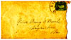

Dear Ma,
 I hope you have received the letter sent off on yesterday. When I left home I thought perhaps I would have returned before this; but instead of that we are getting further away and I hope gaining an important victory for the confederacy. Our division of the army was preetty quiet on Saturday and Sunday, but a pretty hard battle occurred Sunday evening, to our right, on the York River Railroad about eight miles below Richmond. Gen. Hills division was the principal one engaged. EArly this morning all Jackson's troops crossed the Chickahomany and all the army are following up the enemy: for I should have stated that he was again whipped on yesterday. We crossed the battlefield this morning! There were many dead and for miles the country is strewn with knapsacks, overcoats, blankets and variousother articles. Squads of prisoners have be4en coming in a lld ay and probably five or six hundred have been captured. I saw about three hundred captured horses and mules this morning. The enemy have crossed a stream fourteen miles below richmond and blown up the bridge, and heavy cannonading has been going on this evening across the stream. Time is improtant for them in order to get commisary stores out of the way. If it were not for his Gunboats McClelland might find some difficulty in finding a place of rest on Virginia's soil.
I hope you have received the letter sent off on yesterday. When I left home I thought perhaps I would have returned before this; but instead of that we are getting further away and I hope gaining an important victory for the confederacy. Our division of the army was preetty quiet on Saturday and Sunday, but a pretty hard battle occurred Sunday evening, to our right, on the York River Railroad about eight miles below Richmond. Gen. Hills division was the principal one engaged. EArly this morning all Jackson's troops crossed the Chickahomany and all the army are following up the enemy: for I should have stated that he was again whipped on yesterday. We crossed the battlefield this morning! There were many dead and for miles the country is strewn with knapsacks, overcoats, blankets and variousother articles. Squads of prisoners have be4en coming in a lld ay and probably five or six hundred have been captured. I saw about three hundred captured horses and mules this morning. The enemy have crossed a stream fourteen miles below richmond and blown up the bridge, and heavy cannonading has been going on this evening across the stream. Time is improtant for them in order to get commisary stores out of the way. If it were not for his Gunboats McClelland might find some difficulty in finding a place of rest on Virginia's soil.
 We haven't seen our wagons for five days and have lived principally on hard bread and haven't been particular about clean sheets ofr the abundance of our covering. It is now about sundown and I will stop; but probably add somthing more before I mail it. I have just heard that Capt. Newly will leave the army in the morning and will write a few lines more and give it to him to mail.
We haven't seen our wagons for five days and have lived principally on hard bread and haven't been particular about clean sheets ofr the abundance of our covering. It is now about sundown and I will stop; but probably add somthing more before I mail it. I have just heard that Capt. Newly will leave the army in the morning and will write a few lines more and give it to him to mail.
 Four of our boys have fallen out of ranks complaining; Strickler, Mynes and Meade, also Tom White but I hope they won't be much unwell. I suppose you all are engaged in harvesting. Crops are rather light in theis part of the country. (undecipherable). After leaving Gordonsville we have passed through miserably poor country; sometimes passing for five miles through flat piney woods.
Four of our boys have fallen out of ranks complaining; Strickler, Mynes and Meade, also Tom White but I hope they won't be much unwell. I suppose you all are engaged in harvesting. Crops are rather light in theis part of the country. (undecipherable). After leaving Gordonsville we have passed through miserably poor country; sometimes passing for five miles through flat piney woods.


Return to the Booker Collection